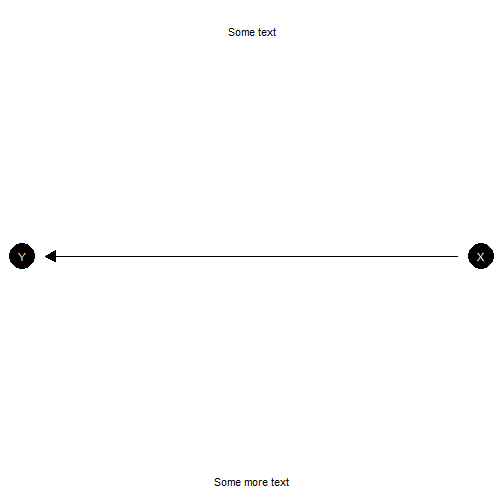
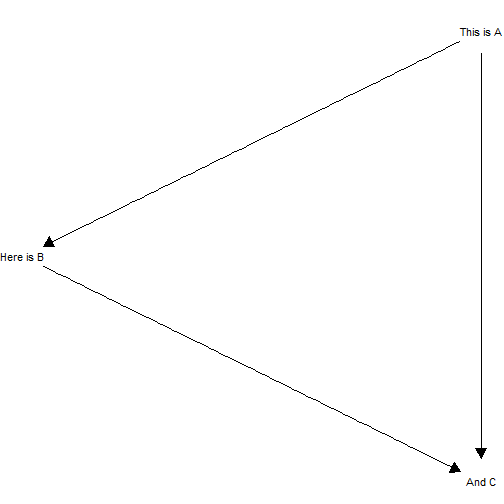
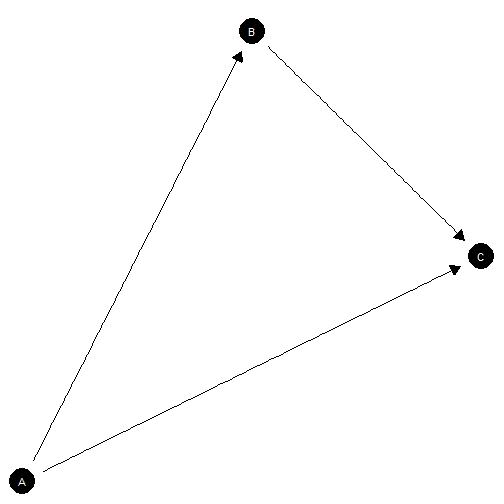
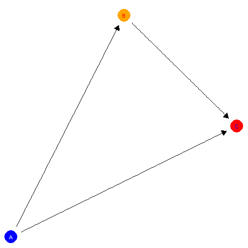
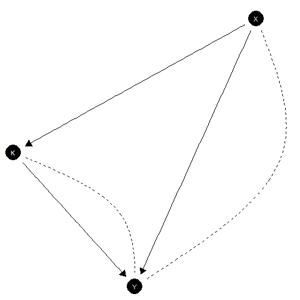
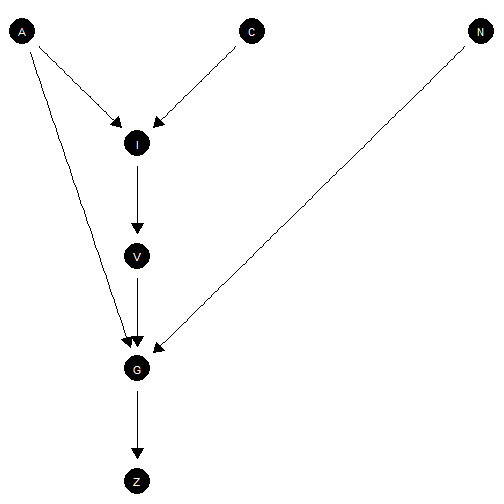
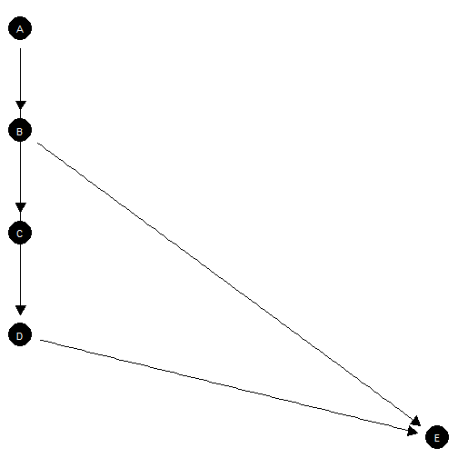
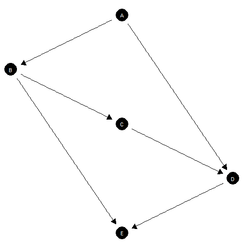

Plotting functionality makes use of the Sugiyama layout from igraph which plots nodes to reflect their position in a causal ordering.
The plot method calls plot_model and passes
provided arguments to it.
ggplot layers
The model that is produced is a ggplot object and
additional layers can be added in the usual way.
model |>
plot_model() +
annotate("text", x = c(1, -1) , y = c(1.5, 1.5), label = c("Some text", "Some more text")) +
coord_flip()

Adding additional
ggplot
layersAdding labels
Provide labels in the same order as model nodes.
model <- make_model("A -> B -> C <- A")
# Check node ordering
inspect(model, "nodes")
#>
#> Nodes:
#> A, B, C
# Provide labels
model |>
plot_model(
labels = c("This is A", "Here is B", "And C"),
nodecol = "white", textcol = "black")

Adding labels
Controlling positions
You can manually set positions using the x_coord and
y_coord arguments.
You can manually set positions using the x_coord and
y_coord arguments.

Specifying coordinates
Controlling color
You can manually control node color and text color for all nodes together or separately.
model |>
plot(x_coord = 0:2, y_coord = c(0, 2, 1),
nodecol = c("blue", "orange", "red"),
textcol = c("white", "red", "blue"))

Controlling colors
Models with unobserved confounding
Unobserved confounding is represented using dashed curves.
make_model('X -> K -> Y <- X; X <-> Y; K <-> Y') |> plot()

Plot showing confounding
More complex models
Effective node placement
make_model("I -> V -> G <- N; C -> I <- A -> G; G -> Z",
add_causal_types = FALSE) |>
plot()

Node positioning for complex model
Requires manual coordinates
This graph has bad node placement.
make_model("D <- A -> B -> C -> D -> E; B -> E",
add_causal_types = FALSE) |>
plot()

Poor node placement
Better:
make_model("D <- A -> B -> C -> D -> E; B -> E",
add_causal_types = FALSE) |>
plot(x_coord = c(0, -.1, 0, .1, 0), y_coord = 5:1)

Manual node placement